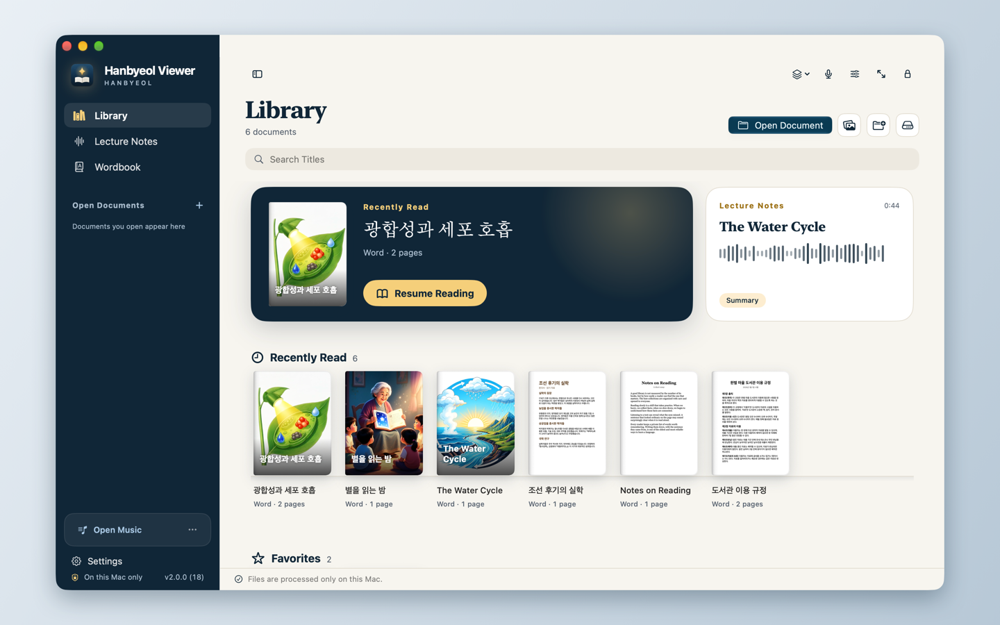
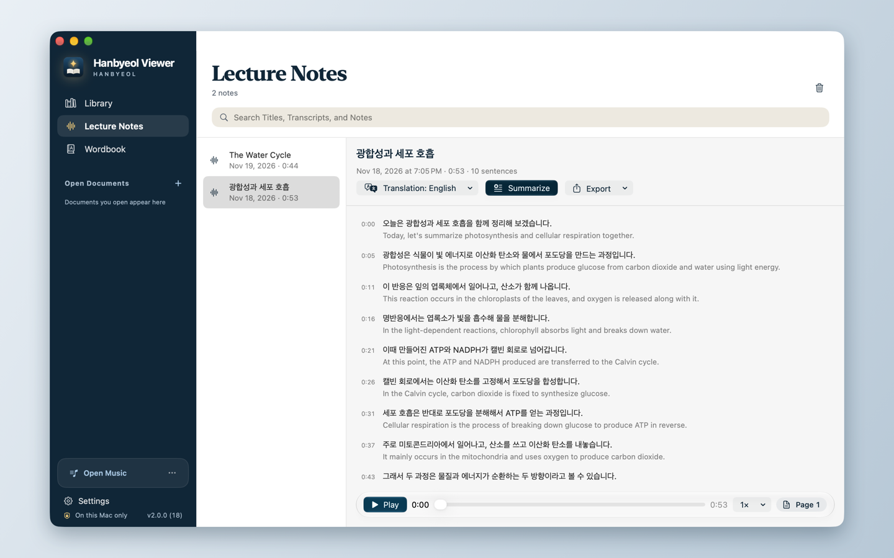
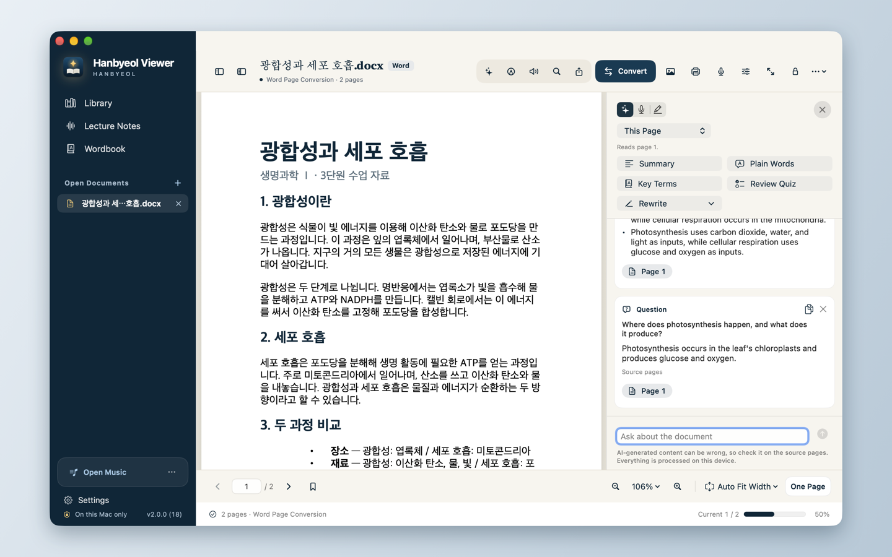
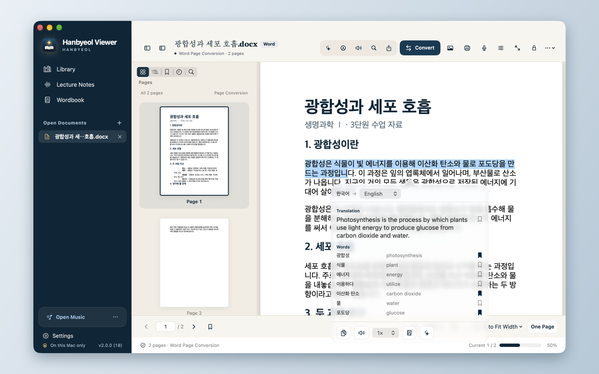

HWP viewer for Mac:
open HWP and HWPX files
Received a Korean .hwp or .hwpx file you can't open on your Mac? Hanbyeol Viewer opens it without Hancom Office, converts it to PDF, reads it aloud and translates it on the spot. It also records and transcribes your classes. From version 2.1 the same app runs on iPhone (including the foldable iPhone Duo) and iPad.
Get it free on the App StoreFree · No ads · No account · macOS 26 or later (Apple silicon) · iOS 26 and iPadOS 26 or later

Open HWP and HWPX files on macOS
HWP and HWPX are the file formats of the Korean word processor Hangul. Hanbyeol Viewer opens both, along with PDF and Word files.
- Opens HWP, HWPX, PDF and Word (DOCX, DOC, RTF)
- Library: shelves for recent documents, Favorites and your collections, showing how far you have read
- Fit width, full page, two-page view, and a text-only reading mode
- Table of contents (built from headings when the file has none), bookmarks and search
- Highlights, underlines and notes
- All Notes: find the highlights, underlines and notes from every document in one place, and export them as Markdown or text
- Opens password-protected PDFs when you enter the password
- App Lock: ask for Touch ID or your Mac login password when the app opens
Record and transcribe your classes
Record a class in Recording Mode beside your document. It is transcribed on your Mac sentence by sentence, together with the page you were on, so clicking a sentence in Lecture Notes plays that moment again and opens its page.
- Transcription while you record, with the pages you looked at
- Click a sentence to hear it again
- A translation under each sentence
- Key points and terms summed up with Apple Intelligence; add terms to your Wordbook
- Export as text, Markdown, PDF, HWPX or Word

Apple Intelligence assistant
Summarize this page, a selection or the whole document, and ask questions to get answers with the pages they came from. It runs on your Mac, so documents are not sent to a server.
- Summaries of this page, a selection or the whole document
- Answers that show the pages they came from
- Plain Words, Key Terms, Review Quiz and Rewrite
- Save an answer as a new document; the original file is not changed
- Needs a Mac with Apple Intelligence turned on

Convert HWP to PDF on your Mac
No upload to a conversion website. Files are converted on your Mac, so work documents and personal papers stay with you.
- HWP and HWPX to PDF
- PDF to HWPX, and save as Word (DOCX)
- Convert many files at once
- Extract pages and merge PDFs
- Password PDF: save a copy that asks for a password when opened
Listen, translate and collect words
Have a document read aloud, or select a sentence to see its translation. Speech and translation both run on your Mac.
- Read aloud with 10 voices and adjustable speed (tuned for Korean)
- Follow along: the sentence being read is highlighted on the page
- Sleep timer
- Select text to translate it and save words to a wordbook
- Sense groups: long English sentences split into meaningful chunks
- Review cards with pronunciation, and export for Anki
- Give words a picture made with Image Playground
- Study sheets: turn saved words into an A4 sheet to save as PDF or print
- Jump from a saved word to the page it came from, and undo a deletion

Questions
How do I open an HWP file on a Mac?
Get Hanbyeol Viewer from the Mac App Store, then right-click the HWP file in Finder and choose Open With → Hanbyeol Viewer. You do not need Hancom Office.
Can I edit an HWP file?
No. Hanbyeol Viewer is a reader and has no editing. If you need to change the text, save the document as Word (DOCX) and edit it in another app; only the text is kept, without tables and layout.
Is it free?
Yes. There are no ads and no account.
Which files cannot be opened?
Password-protected, DRM-locked or distribution-locked HWP documents. Password-protected PDFs open once you enter the password.
Can it record and transcribe a class?
Yes. Record in Recording Mode beside your document and the class is transcribed on your Mac, with the page you were on. Please check your instructor's and school's rules before recording.
Can it summarize documents with AI?
On a Mac with Apple Intelligence turned on, the assistant summarizes a page or the whole document and answers questions with the pages it used. It runs on your Mac and documents are not sent to a server. AI answers can be wrong; check the pages shown with them.
What does it need?
macOS 26 or later on an Apple silicon Mac, or iOS 26 or iPadOS 26 or later on iPhone and iPad.
Is there an iPhone or iPad version?
Yes. From version 2.1 it runs on iPhone and iPad too. It is the same app as on the Mac, so the same App Store link gets it for free. On the foldable iPhone Duo the layout follows the screen: one page when folded, a wider view when unfolded, and you keep your place in between. Comics show two pages side by side when unfolded.